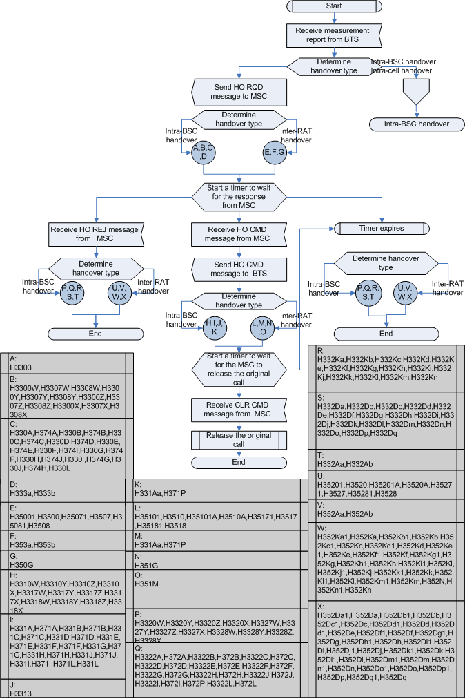
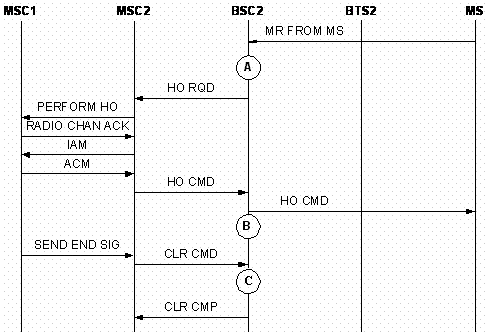

Overview
The Outgoing Inter-RAT Inter-Cell Handover Measurement per Cell can be classified into Outgoing Inter-RAT Inter-Cell Handover Requests (Excluding Directed Retry) and Outgoing Inter-RAT Inter-Cell Handover Requests (Directed Retry).
The following is the block diagram that shows the measurement points of the counters related to outgoing Inter-RAT inter-cell handover.


Table 2 describes the measurement points shown in Figure2.
| Measurement points | Description |
|---|---|
| A | Request for an outgoing inter-RAT inter-cell handover |
| B | Command for an incoming inter-RAT inter-cell handover |
| C | Complete for an incoming inter-RAT inter-cell handover |
- Outgoing Inter-RAT Inter-Cell Handover Requests (Excluding Directed Retry)
BSC2 sends HQ RQD to MSC2, requesting the MSC2 to inform another system of an inter-RAT handover. Based on its data configuration, MSC2 finds out the corresponding MSC of the other system, that is, MSC1, and sends a handover request to MSC1. When the other system is ready for the handover, it informs MSC2. Then MSC2 sends an HO CMD message to BSC2 to inform the MS of handover initiation. BSC2 sends HO CMD to the MS in the source cell, requesting the MS to access the target cell. When the MS accesses to the target cell successfully, MSC1 notifies MSC2 of the completion of incoming inter-RAT inter-cell handover. Then MSC2 sends CLR CMD to BSC2. When the source cell resource has been released, BSC2 replies a CLR CMP message to MSC2. Thus, the outgoing inter-RAT inter-cell handover is complete.

Table 3 describes the measurement points shown in Figure3.
| Measurement points | Description |
|---|---|
| A | Request for an outgoing inter-RAT inter-cell handover |
| B | Command for an incoming inter-RAT inter-cell handover |
| C | Complete for an incoming inter-RAT inter-cell handover |
- Outgoing Inter-RAT Inter-cell Handover (Directed Retry)
After that, BSC2 sends HQ RQD to MSC2, requesting MSC2 to notify the other system of initiating the handover. Based on its data configuration, MSC2 finds out the corresponding of the other system, that is, MSC1, and sends a handover request to MSC1. When the other system is ready for the handover, it informs MSC2. Then MSC2 sends an HO CMD message to BSC2 to notify the MS of initiating the handover. BSC2 sends HO CMD to the MS in the source cell, requesting the MS to access the target cell. When the MS gets normal access to the target cell, MSC1 notifies MSC2 of the completion of incoming inter-RAT inter-cell handover. Then MSC2 sends CLR CMD to BSC2. When the source cell resource has been released, BSC2 replies a CLR CMP message to MSC2. Thus, the outgoing inter-RAT inter-cell handover in the directed retry procedure is complete.
Measurement Counters
| ID | Counter | Description | Original Release |
|---|---|---|---|
| 1278083417 | CELL.INTERRAN.OUTCELL.HO.REQ.NOT.INCLUDE.DR.SD | H3500:Outgoing Inter-RAT Inter-Cell Handover Requests (SDCCH) (Excluding Directed Retry) | Earlier than V900R011 |
| 1278083418 | CELL.INTERRAN.OUTCELL.HO.REQ.TCHF | H3507:Outgoing Inter-RAT Inter-Cell Handover Requests (TCHF) | Earlier than V900R011 |
| 1278083419 | CELL.INTERRAN.OUTCELL.HO.REQ.TCHH | H3508:Outgoing Inter-RAT Inter-Cell Handover Requests (TCHH) | Earlier than V900R011 |
| 1278083420 | CELL.INTERRAN.OUTCELL.HO.CMD.NOT.INCLUDE.DR.SD | H3510:Outgoing Inter-RAT Inter-Cell Handover Commands (SDCCH) (Excluding Directed Retry) | Earlier than V900R011 |
| 1278083421 | CELL.INTERRAN.OUTCELL.HO.CMD.TCHF | H3517:Outgoing Inter-RAT Inter-Cell Handover Commands (TCHF) | Earlier than V900R011 |
| 1278083422 | CELL.INTERRAN.OUTCELL.HO.CMD.TCHH | H3518:Outgoing Inter-RAT Inter-Cell Handover Commands (TCHH) | Earlier than V900R011 |
| 1278083423 | CELL.INTERRAN.OUTCELL.HO.FAIL.NOT.INCLUDE.DR.SD | H3520:Failed Outgoing Inter-RAT Inter-Cell Handovers (SDCCH) (Excluding Directed Retry) | Earlier than V900R011 |
| 1278083424 | CELL.INTERRAN.OUTCELL.HO.FAIL.TCHF | H3527:Failed Outgoing Inter-RAT Inter-Cell Handovers (TCHF) | Earlier than V900R011 |
| 1278083425 | CELL.INTERRAN.OUTCELL.HO.FAIL.TCHH | H3528:Failed Outgoing Inter-RAT Inter-Cell Handovers (TCHH) | Earlier than V900R011 |
| 1278083426 | CELL.INTERRAN.OUTCELL.HO.FAIL.MS.RPT.ABNORM.REL.UNS | H352Da:Failed Outgoing Inter-RAT Inter-Cell Handovers (Reconnection to Old Channels) (Abnormal Release, Unspecified) | Earlier than V900R011 |
| 1278083427 | CELL.INTERRAN.OUTCELL.HO.FAIL.MS.RPT.ABNORM.REL.CHN | H352Db:Failed Outgoing Inter-RAT Inter-Cell Handovers (Reconnection to Old Channels) (Abnormal Release, Channel Unacceptable) | Earlier than V900R011 |
| 1278083428 | CELL.INTERRAN.OUTCELL.HO.FAIL.MS.RPT.ABNORM.REL.T.E | H352Dc:Failed Outgoing Inter-RAT Inter-Cell Handovers (Reconnection to Old Channels) (Abnormal Release, Timer Expired) | Earlier than V900R011 |
| 1278083429 | CELL.INTERRAN.OUTCELL.HO.FAIL.MS.RPT.ABNORM.REL.NO.ACT | H352Dd:Failed Outgoing Inter-RAT Inter-Cell Handovers (Reconnection to Old Channels) (Abnormal Release, No Activity on the Radio Path) | Earlier than V900R011 |
| 1278083430 | CELL.INTERRAN.OUTCELL.HO.FAIL.MS.RPT.PREEMPT.RLS | H352De:Failed Outgoing Inter-RAT Inter-Cell Handovers (Reconnection to Old Channels) (Preemptive Release) | Earlier than V900R011 |
| 1278083431 | CELL.INTERRAN.OUTCELL.HO.FAIL.MS.RPT.HO.TA | H352Df:Failed Outgoing Inter-RAT Inter-Cell Handovers (Reconnection to Old Channels) (Handover Failed, Timing Advance out of Range) | Earlier than V900R011 |
| 1278083432 | CELL.INTERRAN.OUTCELL.HO.FAIL.MS.RPT.NO.CH.MODE | H352Dg:Failed Outgoing Inter-RAT Inter-Cell Handovers (Reconnection to Old Channels) (Channel Mode Unavailable) | Earlier than V900R011 |
| 1278083433 | CELL.INTERRAN.OUTCELL.HO.FAIL.MS.RPT.FREQ | H352Dh:Failed Outgoing Inter-RAT Inter-Cell Handovers (Reconnection to Old Channels) (Frequency Unavailable) | Earlier than V900R011 |
| 1278083434 | CELL.INTERRAN.OUTCELL.HO.FAIL.MS.RPT.CALL.CLR | H352Di:Failed Outgoing Inter-RAT Inter-Cell Handovers (Reconnection to Old Channels) (Call Already Cleared) | Earlier than V900R011 |
| 1278083435 | CELL.INTERRAN.OUTCELL.HO.FAIL.MS.RPT.SEMANT | H352Dj:Failed Outgoing Inter-RAT Inter-Cell Handovers (Reconnection to Old Channels) (Semantically Incorrect Message) | Earlier than V900R011 |
| 1278083436 | CELL.INTERRAN.OUTCELL.HO.FAIL.MS.RPT.INV.MAN | H352Dk:Failed Outgoing Inter-RAT Inter-Cell Handovers (Reconnection to Old Channels) (Invalid Mandatory Information) | Earlier than V900R011 |
| 1278083437 | CELL.INTERRAN.OUTCELL.HO.FAIL.MS.RPT.MSG.TYPE.NEXISTENT | H352Dl:Failed Outgoing Inter-RAT Inter-Cell Handovers (Reconnection to Old Channels) (Message Type Non-existent or Not Implemented) | Earlier than V900R011 |
| 1278083438 | CELL.INTERRAN.OUTCELL.HO.FAIL.MS.RPT.MSG.TYPE.NOT.COMPATIBLE | H352Dm:Failed Outgoing Inter-RAT Inter-Cell Handovers (Reconnection to Old Channels) (Message Type Not Compatible with Protocol State) | Earlier than V900R011 |
| 1278083439 | CELL.INTERRAN.OUTCELL.HO.FAIL.MS.RPT.CONDITION.IE.ERR | H352Dn:Failed Outgoing Inter-RAT Inter-Cell Handovers (Reconnection to Old Channels) (Conditional IE Error) | Earlier than V900R011 |
| 1278083440 | CELL.INTERRAN.OUTCELL.HO.FAIL.MS.RPT.NO.CA | H352Do:Failed Outgoing Inter-RAT Inter-Cell Handovers (Reconnection to Old Channels) (No Cell Allocation Available) | Earlier than V900R011 |
| 1278083441 | CELL.INTERRAN.OUTCELL.HO.FAIL.MS.RPT.PROTOCL | H352Dp:Failed Outgoing Inter-RAT Inter-Cell Handovers (Reconnection to Old Channels) (Protocol Error Unspecified) | Earlier than V900R011 |
| 1278083442 | CELL.INTERRAN.OUTCELL.HO.FAIL.MS.RPT.OTHER | H352Dq:Failed Outgoing Inter-RAT Inter-Cell Handovers (Reconnection to Old Channels) (Other Causes) | Earlier than V900R011 |
| 1278083443 | CELL.INTERRAN.OUTCELL.HO.FAIL.HO.REJ.OM.INTERVENTION | H352Ka:Failed Outgoing Inter-RAT Inter-Cell Handovers (Handover Request Rejected) (OM Intervention) | Earlier than V900R011 |
| 1278083444 | CELL.INTERRAN.OUTCELL.HO.FAIL.HO.REJ.EQUIP.FAIL | H352Kb:Failed Outgoing Inter-RAT Inter-Cell Handovers (Handover Request Rejected) (Equipment Failure) | Earlier than V900R011 |
| 1278083445 | CELL.INTERRAN.OUTCELL.HO.FAIL.HO.REJ.NO.RADIO.RES | H352Kc:Failed Outgoing Inter-RAT Inter-Cell Handovers (Handover Request Rejected) (No Radio Resource Available) | Earlier than V900R011 |
| 1278083446 | CELL.INTERRAN.OUTCELL.HO.FAIL.HO.REJ.REQ.NO.TER.RES | H352Kd:Failed Outgoing Inter-RAT Inter-Cell Handovers (Handover Request Rejected) (Requested Terrestrial Resource Unavailable) | Earlier than V900R011 |
| 1278083447 | CELL.INTERRAN.OUTCELL.HO.FAIL.HO.REJ.BSS.NOT.EQUIP | H352Ke:Failed Outgoing Inter-RAT Inter-Cell Handovers (Handover Request Rejected) (BSS not Equipped) | Earlier than V900R011 |
| 1278083448 | CELL.INTERRAN.OUTCELL.HO.FAIL.HO.REJ.INVAILD.CELL | H352Kf:Failed Outgoing Inter-RAT Inter-Cell Handovers (Handover Request Rejected) (Invalid Cell) | Earlier than V900R011 |
| 1278083449 | CELL.INTERRAN.OUTCELL.HO.FAIL.HO.REJ.REQ.TRANSC.UNAIVL | H352Kg:Failed Outgoing Inter-RAT Inter-Cell Handovers (Handover Request Rejected) (Requested Transcoding/Rate Adaption Unavailable) | Earlier than V900R011 |
| 1278083450 | CELL.INTERRAN.OUTCELL.HO.FAIL.HO.REJ.CIR.POOL.MISMATCH | H352Kh:Failed Outgoing Inter-RAT Inter-Cell Handovers (Handover Request Rejected) (Circuit Pool Mismatch) | Earlier than V900R011 |
| 1278083451 | CELL.INTERRAN.OUTCELL.HO.FAIL.HO.REJ.REQ.NO.SV | H352Ki:Failed Outgoing Inter-RAT Inter-Cell Handovers (Handover Request Rejected) (Requested Speech Version Unavailable) | Earlier than V900R011 |
| 1278083452 | CELL.INTERRAN.OUTCELL.HO.FAIL.HO.REJ.CIPH.ALG.NOT.SUPT | H352Kj:Failed Outgoing Inter-RAT Inter-Cell Handovers (Handover Request Rejected) (Ciphering Algorithm not Supported) | Earlier than V900R011 |
| 1278083453 | CELL.INTERRAN.OUTCELL.HO.FAIL.HO.REJ.TER.CIR.ALRDY.ALLOC | H352Kk:Failed Outgoing Inter-RAT Inter-Cell Handovers (Handover Request Rejected) (Terrestrial circuit already allocated) | Earlier than V900R011 |
| 1278083454 | CELL.INTERRAN.OUTCELL.HO.FAIL.HO.REJ.INVAILD.MSG | H352Kl:Failed Outgoing Inter-RAT Inter-Cell Handovers (Handover Request Rejected) (Invalid Message) | Earlier than V900R011 |
| 1278083455 | CELL.INTERRAN.OUTCELL.HO.FAIL.HO.REJ.PROTOCOL.ERR | H352Km:Failed Outgoing Inter-RAT Inter-Cell Handovers (Handover Request Rejected) (Protocol Error between BSS and MSC) | Earlier than V900R011 |
| 1278083456 | CELL.INTERRAN.OUTCELL.HO.FAIL.HO.REJ.OTHER | H352Kn:Failed Outgoing Inter-RAT Inter-Cell Handovers (Handover Request Rejected) (Other Causes) | Earlier than V900R011 |
| 1278083457 | CELL.INTERRAN.OUTCELL.HO.FAIL.CLR.CMD.RADIO.INTF.MSG.FAIL | H352Ha:Failed Outgoing Inter-RAT Inter-Cell Handovers (Clear Commands Sent By MSC) (Radio Interface Message Failure) | Earlier than V900R011 |
| 1278083458 | CELL.INTERRAN.OUTCELL.HO.FAIL.CLR.CMD.RADIO.INTF.FAIL | H352Hb:Failed Outgoing Inter-RAT Inter-Cell Handovers (Clear Commands Sent By MSC) (Radio Interface Failure) | Earlier than V900R011 |
| 1278083459 | CELL.INTERRAN.OUTCELL.HO.FAIL.CLR.CMD.OM.INTERVENTION | H352Hc:Failed Outgoing Inter-RAT Inter-Cell Handovers (Clear Commands Sent By MSC) (OM Intervention) | Earlier than V900R011 |
| 1278083460 | CELL.INTERRAN.OUTCELL.HO.FAIL.CLR.CMD.EQUIP.FAIL | H352Hd:Failed Outgoing Inter-RAT Inter-Cell Handovers (Clear Commands Sent By MSC) (Equipment Failure) | Earlier than V900R011 |
| 1278083461 | CELL.INTERRAN.OUTCELL.HO.FAIL.CLR.CMD.PREEMPTION | H352He:Failed Outgoing Inter-RAT Inter-Cell Handovers (Clear Commands Sent By MSC) (Preemption) | Earlier than V900R011 |
| 1278083462 | CELL.INTERRAN.OUTCELL.HO.FAIL.CLR.CMD.INVALID.MSG | H352Hf:Failed Outgoing Inter-RAT Inter-Cell Handovers (Clear Commands Sent By MSC) (Invalid Message) | Earlier than V900R011 |
| 1278083463 | CELL.INTERRAN.OUTCELL.HO.FAIL.CLR.CMD.PROTOCOL.ERR | H352Hg:Failed Outgoing Inter-RAT Inter-Cell Handovers (Clear Commands Sent By MSC) (Protocol Error between BSS and MSC) | Earlier than V900R011 |
| 1278083464 | CELL.INTERRAN.OUTCELL.HO.FAIL.CLR.CMD.OTHER | H352Hh:Failed Outgoing Inter-RAT Inter-Cell Handovers (Clear Commands Sent By MSC) (Other Causes) | Earlier than V900R011 |
| 1278083465 | CELL.INTERRAN.OUTCELL.HO.FAIL.A.INTERF.FAIL | H352G:Failed Outgoing Inter-RAT Inter-Cell Handovers (A Interface Failure) | Earlier than V900R011 |
| 1278083466 | CELL.INTERRAN.OUTCELL.HO.FAIL.T7.EXP | H352L:Failed Outgoing Inter-RAT Inter-Cell Handovers (T7 Expired) | Earlier than V900R011 |
| 1278083467 | CELL.INTERRAN.OUTCELL.HO.FAIL.T8.EXP | H352C:Failed Outgoing Inter-RAT Inter-Cell Handovers (T8 Expired) | Earlier than V900R011 |
| 1278083468 | CELL.INTERRAN.OUTCELL.HO.REQ | CH350:Outgoing Inter-RAT Inter-Cell Handover Requests | Earlier than V900R011 |
| 1278083469 | CELL.INTERRAN.OUTCELL.HO.SUCC | CH353:Successful Outgoing Inter-RAT Inter-Cell Handovers | Earlier than V900R011 |
| 1278083470 | CELL.INTERRAN.OUTCELL.HO.SUCC.RATE | TH353:Success Rate of Outgoing Inter-RAT Inter-Cell Handover | Earlier than V900R011 |
| 1278083471 | CELL.INTERRAN.OUTCELL.HO.CMD | CH351:Outgoing Inter-RAT Inter-Cell Handover Commands | Earlier than V900R011 |
| 1278083472 | CELL.INTERRAN.OUTCELL.HO.FAIL | CH352:Failed Outgoing Inter-RAT Inter-Cell Handovers | Earlier than V900R011 |
| 1278083473 | CELL.INTERRAN.OUTCELL.HO.FAIL.RECONN.SUCC | CH352D:Failed Outgoing Inter-RAT Inter-Cell Handovers (Reconnection to Old Channels) | Earlier than V900R011 |
| 1278083474 | CELL.INTERRAN.OUTCELL.HO.FAIL.REQ.REJ | CH352K:Failed Outgoing Inter-RAT Inter-Cell Handovers (Handover Request Rejected) | Earlier than V900R011 |
| 1278083475 | CELL.INTERRAN.OUTCELL.HO.FAIL.MSC.CLR | CH352H:Failed Outgoing Inter-RAT Inter-Cell Handovers (Clear Commands Sent By MSC) | Earlier than V900R011 |
| 1278083476 | CELL.INTERRAN.OUTCELL.HO.REQ.BSC.LOOP | H353a:Number of Inter-RAT Outgoing Cell Handover Requests During BSC Local Switch | Earlier than V900R011 |
| 1278083477 | CELL.INTERRAN.OUTCELL.HO.REQ.BTS.LOOP | H353b:Number of Inter-RAT Outgoing Cell Handover Requests During BTS Local Switch | Earlier than V900R011 |
| 1278083478 | CELL.INTERRAN.OUTCELL.HO.CMD.BSC.LOOP | H351Aa:Number of Inter-RAT Outgoing Cell Handovers During BSC Local Switch | Earlier than V900R011 |
| 1278083479 | CELL.INTERRAN.OUTCELL.HO.CMD.BTS.LOOP | H351Ab:Number of Inter-RAT Outgoing Cell Handovers During BTS Local Switch | Earlier than V900R011 |
| 1278083480 | CELL.INTERRAN.OUTCELL.HO.FAIL.BSC.LOOP | H352Aa:Number of Inter-RAT Outgoing Cell Handover Failures During BSC Local Switch | Earlier than V900R011 |
| 1278083481 | CELL.INTERRAN.OUTCELL.HO.FAIL.BTS.LOOP | H352Ab:Number of Inter-RAT Outgoing Cell Handover Failures During BTS Local Switch | Earlier than V900R011 |
| 1278083482 | CELL.INTERRAN.OUTCELL.HO.SUCC.BSC.LOOP | CH353a:Number of Inter-RAT Outgoing Cell Handover Successes During BSC Local Switch | Earlier than V900R011 |
| 1278083483 | CELL.INTERRAN.OUTCELL.HO.SUCC.RATE.BSC.LOOP | TH353a:Success Rate of Inter-RAT Outgoing Cell Handover During BSC Local Switch | Earlier than V900R011 |
| 1278083484 | CELL.INTERRAN.OUTCELL.HO.SUCC.BTS.LOOP | CH353b:Number of Inter-RAT Outgoing Cell Handover Successes During BTS Local Switch | Earlier than V900R011 |
| 1278083485 | CELL.INTERRAN.OUTCELL.HO.SUCC.RATE.BTS.LOOP | TH353b:Success Rate of Inter-RAT Outgoing Cell Handover During BTS Local Switch | Earlier than V900R011 |
| 1278083486 | CELL.INTERRAN.OUTCELL.HO.REQ.LOAD.BASED.HO | H350G:Outgoing Inter-RAT Inter-Cell Handover Requests(load based handover) | Earlier than V900R011 |
| 1278083487 | CELL.INTERRAN.OUTCELL.HO.CMD.LOAD.BASED.HO | H351G:Outgoing Inter-RAT Inter-Cell Handover Commands(load based handover) | Earlier than V900R011 |
| 1278083488 | CELL.INTERRAN.OUTCELL.HO.FAIL.TARGETCELL.TRAFLOAD.HIGHER | H352N:Number of Failed Outgoing Inter-RAT Inter-Cell Handovers (Target Cell Traffic Load Higher) | Earlier than V900R011 |
| 1278083489 | CELL.INTERRAN.OUTCELL.HO.REQ.SERVICE.BASED.HO | H350M:Outgoing Inter-RAT Inter-Cell Handover Requests(service based handover) | Earlier than V900R011 |
| 1278083490 | CELL.INTERRAN.OUTCELL.HO.CMD.SERVICE.BASED.HO | H351M:Outgoing Inter-RAT Inter-Cell Handover Commands(service based handover) | Earlier than V900R011 |
| 1278083491 | CELL.INTERRAN.OUTCELL.HO.FAIL.SERVICE.BASED.HO | H352M:Failed Outgoing Inter-RAT Inter-Cell Handovers(service based handover) | Earlier than V900R011 |
| 1278083492 | CELL.INTERRAN.OUTCELL.HO.REQ.DR.SD | H3500A:Outgoing Inter-RAT Inter-Cell Handover Requests (SDCCH) (Directed Retry) | Earlier than V900R011 |
| 1278083493 | CELL.INTERRAN.OUTCELL.HO.CMD.DR.SD | H3510A:Outgoing Inter-RAT Inter-Cell Handover Commands (SDCCH) (Directed Retry) | Earlier than V900R011 |
| 1278083494 | CELL.INTERRAN.OUTCELL.HO.FAIL.DR.SD | H3520A:Failed Outgoing Inter-RAT Inter-Cell Handovers (SDCCH) (Directed Retry) | Earlier than V900R011 |
Counter Relationship
None